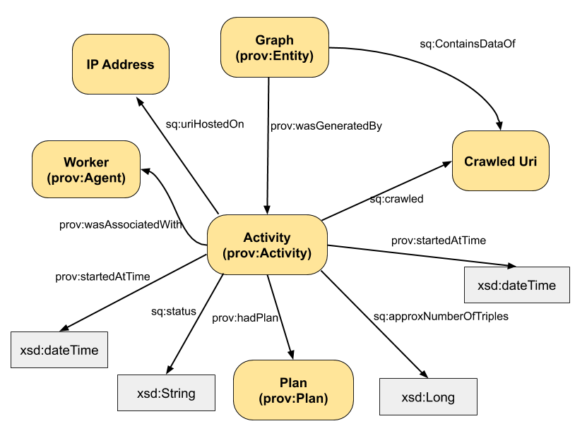

Overview
Squirrel collects metadata in the worker while crawling. There will be a meta data graph for every attempt a worker is doing to crawl a URI. Even if a URI is crawled multiple times, the single crawling activities need to have different URIs. Therefore, the worker will create a UUID-based URI for every crawleable URI. This URI will be used (with different suffixes) for:
- the activity resource in the meta data
- the name of the graph (or file) containing the crawled data
- the plan resource in the meta data comprising information about the single activities of the crawler
Meta data model
The meta data will be be available and stored in the sink as RDF with the following structure:

Regarding prefixes, we assume that prov is the PROV-O ontology, sq stands for the Squirrel vocabulary while meta is the prefix of all generated instance URIs (e.g., the acitivity URI). We assume that the UUID used for our example is 123.
@prefix rdfs: <http://www.w3.org/2000/01/rdf-schema#> .
@prefix xsd: <http://www.w3.org/2001/XMLSchema#> .
@prefix prov: <http://www.w3.org/ns/prov-o/> .
@prefix sq: <http://www.w3id.org/squirrel/vocab#> .
@prefix meta: <http://www.w3id.org/squirrel/metadata#> .
meta:123_activity a prov:Activity;
prov:qualifiedAssociation meta:123_workerAssociation;
prov:wasAssociatedWith meta:Worker_ID;
prov:startedAtTime "2018-05-01T00:00:00Z"^^xsd:dateTime;
prov:endedAtTime "2018-05-01T01:11:00Z"^^xsd:dateTime;
sq:crawledUri <http://example.org/myExample>;
sq:numberOfTriples "99"^^xsd:long;
sq:hostedOn "8.8.8.8";
sq:status "successfull" .
meta:123_workerAssociation a prov:Association;
prov:agent meta:Worker_ID;
prov:hadPlan meta:123_Plan .
meta:123_plan a prov:Plan;
rdfs:comment """org.dice_research.squirrel.fetcher.HTTPFetcher,
org.dice_research.squirrel.analyzer.impl.RDFAnalyzer,
...""" .
meta:123_resultgraph a prov:Entity;
prov:wasGeneratedBy meta:123_activity;
sq:containsDataOf <http://example.org/myExample> .
meta:Worker_ID a prov:Agent .
meta:Worker_ID is a unique URI of a worker. http://example.org/myExample is the URI that has been crawled.
During the crawling process, every class that is handling the URI and influences the result or the data of the URI (Fetcher, Analyzers, Collector and Sink). This is independently done from the implementation of such components, being registred on their managers.